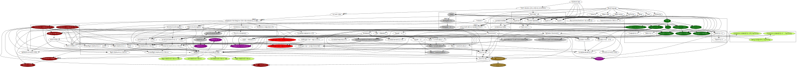

In Axiomatic Set Theory, Bernays mentions (hardcopy p.48, also digital p.48 in two-page view) how all of the inference schemas of predicate calculus are derivable from the usual undefined terminology and definitions, and a short summary:
As our text was strictly using classical logic, there was no good editorial reason to go further there. To use logic as a parameter for set theory, we need to see how our reference non-classical logics vary from classical logic. We summarize the second and third points as:
| Name | ||
|---|---|---|
| (Ea)Z(a) := ~((Aa)~Z(a)) | a is a bound variable due to the quantifier | |
| (Aa)Z(a) ├ Z(t) | Universal instantiation | Z(a) may have implicitly used term t |
| Z(t) ├ (Ea)Z(a) | Existential generalization | Z(t), and all notationally prior statements to Z(t), must not have used symbol a |
| P ⇒ Z(t) ├ P ⇒ (Aa)Z(a) | Universal generalization | P ⇒ Z(t), and all notationally prior statements to P ⇒ Z(t), must not have used symbol a |
| Z(t) ⇒ P ├ (Ea)Z(a) ⇒ A | Existential generalization | Z(t) ⇒ P, and all notationally prior statements to Z(t) ⇒ P, must not have used symbol a |
| P, P ⇒ Q ├ Q | modus ponens |
In the above:
What we are following instructions for, is how to build out the formal infrastructure for representing all of Intuitionistic logic, the various approaches to paraconsistent logic, the various approaches to defeasible logic, and the various approaches to relevance logic. I will include some commentary about what parts of classical logic fail for these. However, I am using close to the minimum known possible undefined terminology here. I'm expecting everything needed for these, to be formally definable in terms of what we're looking at here.
As our first example of a conditional proof, let's formally calculate transitivity of implication for three propositional variables P, Q, R:
P ⇒ Q, Q ⇒ R ├ P ⇒ R
We'll use a table-based layout, instead of an ordered list. The actual calculation, is notated in the second column.
| Proposition | Rationale | |
|---|---|---|
| 1. | P ⇒ Q | Given |
| 2. | Q ⇒ R | Given |
| 3. | P | Hypothesis |
| 4. | Q | modus ponens on (1) and (3) |
| 5. | R | modus ponens on (2) and (4) |
| 6. | P ⇒ R | Implication introduction, (3) and (5) |
The above table documents a formal calculation that the transitivity of implication syntactical entailment, is derivable i.e. provable from modus ponens. The third column is a terse mnemonic that in principle can be expanded into full sentences. That is, we can translate the above table into a (much longer) English-wrapped conditional proof. In the tabular representation for conditionally proving a syntactical entailment:
Other names for transitivity of implication are "hypothetical syllogism" (abbreviated HS), "chain argument", or the exceedingly generic "chain rule".
The hypotheses to be tested for the conditional proof technique, can be read off of modus ponens: they're the missing hypotheses of the modus ponens instances. We had two candidate hypotheses, A and B. However, B was the result of one of the modus ponens instances, while A could not be obtained that way.
Also, we could replace the given P ⇒ Q and its matching modus ponens use, with the syntactical entailment rule P ├ Q . Likewise, we could replace the given Q ⇒ R and its matching modus ponens use, with the syntactical entailment rule Q ├ R . Notating this is tricky, as syntactical entailment rules are not truth-valued. In the absence of a proper authority, I'll extend the syntactical entailment notation by wrapping entailment rules in parentheses. The non-standard parts of the following table, have background color yellow.
The above proof, is invalid for Belnap's four-valued logic(!). To verify this, let P and R have truth value contradiction and Q have truth value unknown. It is then a mechanical exercise that P ⇒ Q and Q ⇒ R both evaluate to true, yet P ⇒ R evaluates to their common truth value contradiction.
Let us introduce some terminology. For a nonstrict implication A ⇒ B, we say:
Likewise, for a syntactical entailment A ├ B, we say:
From the truth table description of ⇒, it appears the problem is that for the non-classical logics, we don't actually know that the Hypothesis step, and the reached Conclusion step, do not have non-classical truth values. (This choice of phrasing, is to allow for Intuitionistic logic.) There may be other problems as well. For now, we will treat implication introduction as valid for classical logic, but not any of the truth table described non-classical logics we are considering.
Once we have verified the analogies that allow translating a truth table verification of a propositional calculus inference rule, to a symbolic logic verification of said inference rule, the exercise of verifying transitivity of implication (or lack thereof) for all five truth table-described nonclassical logics can be done. (This verification will be classical logic reasoning about a given non-classical logic.)
| Name | Fails for which of our logics? | Fails for other logics? | |
|---|---|---|---|
| P ⇒ Q, Q ⇒ R ├ P ⇒ R | Transitivity of implication | Belnap | Defeasible logics |
| (P ├ Q), Q ⇒ R ├ P ⇒ R | Invert using P ├ Q on the hypothesis of Q ⇒ R | Belnap | Defeasible logics |
| P ⇒ Q, (Q ├ R) ├ P ⇒ R | Using Q ├ R on the conclusion of P ⇒ Q | Belnap | Defeasible logics |
The general issue defeasible logics have with transitivity of implication, is that in natural language we omit many "default hypotheses". that is, a plain English statement describing a (semantic) implication, often has a much larger formal expansion than a direct interpretation would suggest. This is not a problem for the level of mathematics, that we are following instructions for building out. (This also means defeasible logics have issues either with modus ponens itself, or the conditional proof formalism as a justification for implication introduction.)
A philosophical problem with the non-standard notation I introduced above, is that strictly speaking an inference rule is not a truth-valued statement. We would like to think of an inference rule as a function, with domain and range statements. (None of "function", "domain", or "range" have been formally defined, at this point.) That is, if we were to consider a standard inference rule using ├ to be "first order with domain of discourse statements", then the extended notation inference rules in the above table would be "second order with domain of discourse statements": these use variables that range over inference rules, rather than statements i.e. truth-valued expressions.
Considering that our text predates the Gentzen-style notation, it appears that we can take an alternate form of modus ponens as axiomatic:
| Name | ||
|---|---|---|
| P, (P ├ Q) ├ Q | modus ponens (for ├) |
| Inference rule | Proposition | Rationale | |
|---|---|---|---|
| 1. | P ├ Q | Given | |
| 2. | Q ├ R | Given | |
| 3. | P | Hypothesis | |
| 4. | Q | modus ponens on (1) and (3) | |
| 5. | R | modus ponens on (2) and (4) | |
| 6. | P ├ R | Syntactical entailment introduction, (3) and (5) |
The more typical name for this, is the cut rule. We have three other variations with very similar proofs:
| Name | Fails for which of our logics? | Fails for other logics? | |
|---|---|---|---|
| (P ├ Q), (Q ├ R) ├ (P ├ R) | Transitivity of syntactical entailment, i.e. cut rule | None | Defeasible logics |
| (P ├ Q), Q ⇒ R ├ (P ├ R) | Using Q ⇒ R on the conclusion of P ├ Q | None | Defeasible logics |
| P ⇒ Q, (Q ├ R) ├ (P ├ R) | Invert using P ⇒ Q on the hypothesis of Q ├ R | None | Defeasible logics |
| P ⇒ Q, Q ⇒ R ├ (P ├ R) | None | Defeasible logics |
We also have transitivity of syntactical equivalence, as follows:
| Inference Rule | Rationale | |
|---|---|---|
| 1. | A ⟛ B | Given |
| 2. | B ⟛ C | Given |
| 3. | A ├ B | Definition of ⟛ on (1) |
| 4. | B ├ C | Definition of ⟛ on (2) |
| 5. | A ├ C | Transitivity of syntactical entailment on (3), (4) |
| 6. | B ├ A | Definition of ⟛ on (1) |
| 7. | C ├ B | Definition of ⟛ on (2) |
| 8. | C ├ A | Transitivity of syntactical entailment on (6), (7) |
| 9. | A ⟛ B | Definition of ⟛ on (5), (8) |
| Name | Fails for which of our logics? | Fails for other logics? | |
|---|---|---|---|
| (A ⟛ B), (B ⟛ C) ├ (A ⟛ C) | Transitivity of syntactical equivalence | None | Defeasible logics |
Exercise: demonstrate the following. (Both of these follow from the axiomatic identity inference rule A ├ A.)
| Name | Fails for which of our logics? | Fails for other logics? | |
|---|---|---|---|
| A ⟛ A | Reflexivity of syntactical equivalence | None | None |
| (A ⟛ B) ⟛ (B ⟛ A) | Commutativity of syntactical equivalence | None | None |
Uniform substitutions are central to the notational manipulations of mathematics. Since one of my objectives here, is to identify which set theories can mathematically model notation without the assistance of an intended interpretation, we shall just describe rather than define how uniform substitutions work.
For three truth-valued expressions A, B, C, applying A ↦ B to C has the intended interpretation that B is to be globally substituted for A in the expression C, resulting in a truth-valued expression C[B/A]. We have the following desired properties:
A definition A := B is enough to justify either [A/B] or [B/A] as valid uniform substitutions, or as an entry in a simultaneous substitution.
If A evaluates to a given truth value B, then it is very tempting to say, for a truth-valued expression C, that applying A ↦ B to C partially evaluates C. In particular, if we allow the following expressions to have truth values, for the logics in which the given truth values are used:
We then can translate the truth-table descriptions of the logics we are considering, into (classical) logic. In particular, the intended interpretations semantically entail the syntactical equivalences
| Name | ||
|---|---|---|
| B ⟛ | B[A ↦ true/A] | Intended interpretation of ↦ |
| A ⟛ | A ↦ true | |
| B ⟛ | B[A ↦ false/~A] | |
| ~A ⟛ | A ↦ false | |
| (A ├ B) ⟛ | ((A ↦ true) ├ (B ↦ true)) | Special cases of note |
| A ↦ true ⟛ | (A ↦ true) ↦ true | |
| (A ├ B) ⟛ | (├ (A ↦ true) ⇒ (B ↦ true)) | Intended interpretation of ↦; left side may be a non-classical inference rule, right side is a classical logic inference rule(!) |
The last row, as written, could induce notational ambiguity in a proof written for a non-classical logic. For now, we'll have to be careful in the rationale comments.
These syntactical equivalences in general do not justify uniform substitutions. This will be more evident, when we use this notation to translate truth table descriptions into symbolic logic descriptions of the logical connectives. We expect, from the intended interpretation, the following syntactical entailments:
| Name | ||
|---|---|---|
| A ↦ true, B ├ | B[true/A] | Partial evaluation of B |
| A ↦ false, B ├ | B[false/A] | |
| A ↦ unknown, B ├ | B[unknown/A] | |
| A ↦ contradiction, B ├ | B[contradiction/A] | |
| Principle of non-contradiction | ||
|---|---|---|
| Classical | (A ↦ true) ├ | ~(A ↦ false) |
| (A ↦ false) ├ | ~(A ↦ true) | |
| Kleene weak Kleene strong Lisp/Prolog | (A ↦ true) ├ | ~(A ↦ false) & ~(A ↦ unknown) |
| (A ↦ false) ├ | ~(A ↦ true) & ~(A ↦ unknown) | |
| (A ↦ unknown) ├ | ~(A ↦ true) & ~(A ↦ false) | |
| Belnap Franci | (A ↦ true) ├ | ~(A ↦ false) & ~(A ↦ unknown) & ~(A ↦ contradiction) |
| (A ↦ false) ├ | ~(A ↦ true) & ~(A ↦ unknown) & ~(A ↦ contradiction) | |
| (A ↦ unknown) ├ | ~(A ↦ true) & ~(A ↦ false) & ~(A ↦ contradiction) | |
| (A ↦ contradiction) ├ | ~(A ↦ true) & ~(A ↦ false) & ~(A ↦ unknown) | |
| Principle of ... | ||
|---|---|---|
| Classical | bivalence | ├ (A ↦ false) ∨ (A ↦ true) |
| Kleene weak Kleene strong Lisp/Prolog | trivalence | ├ (A ↦ false) ∨ (A ↦ true) ∨ (A ↦ unknown) |
| Belnap Franci | tetravalence | ├ (A ↦ false) ∨ (A ↦ true) ∨ (A ↦ unknown) ∨ (A ↦ contradiction) |
The principle of non-contradiction (that no truth-valued expression may evaluate to two truth values at once) and the classical logic principle of bivalence (that all truth valued expressions do have a value) also have translations into this extended notation. (Natural language reasoning doesn't fully implement the principle of bivalence: otherwise, the liar paradox could not be stated.)
The other five truth table describable logics we are considering, all have analogous expressions. The principle of non-contradiction looks like it has two consequences:
| Classical logic | |||
|---|---|---|---|
| Inference rule | Proposition | Rationale | |
| 1. | A ├ B | Given | |
| 2. | A | Hypothesis | |
| 3. | B | syntactical inference on (1),(2) | |
| 4. | A ⇒ B | implication introduction on (2),(3) | |
| Inference rule | Proposition | Rationale | |
|---|---|---|---|
| 1. | A ⇒ B | Given | |
| 2. | A | Hypothesis | |
| 3. | B | modus ponens on (1), (2) | |
| 4. | A ├ B | Syntactical entailment introduction, (2) and (3) |
For classical logic only, we have a downgrade procedure from ├ to ⇒ . The upgrade procedure is more reliable; it uses syntactical entailment introduction. Proving the ⇔ versions from the ⇒ versions is left as an exercise.
| Name | Works for which logics? | |
|---|---|---|
| (A ├ B) ├ (├ A ⇒ B) | Downgrade ├ to ⇒ | Classical |
| (A ⟛ B) ├ (├ A ⇔ B) | Downgrade ⟛ to ⇔ | Classical |
| A ⇒ B ├ (A ├ B) | Upgrade ⇒ to ├ | All six |
| A ⇔ B ├ (A ⟛ B) | Upgrade ⇔ to ⟛ | All six |
This shows what broke for Belnap's four-valued logic, when trying to prove transitivity of implication. What was actually proved was:
P ⇒ Q, Q ⇒ R ├ (P ├ R)
P ├ R was then downgraded to P ⇒ R. So at this point, we only have transitivity of implication for classical logic.
It will also be convenient to say that the equality operator = is defined for any pair of truth values (but not arbitrary truth-valued expressions), with the usual properties expected (reflexivity, symmetry, transitivity). For two truth-valued expressions A and B, if whenever A evaluates to a truth value, B evaluates to the same truth value as A, that justifies [B/A] as a valid uniform substitution, or as an entry in a non-uniform substitution.
However, a syntactic equivalence C ⟛ D only guarantees that (classically) (C ↦ true) ⇔ (D ↦ true); this is not enough to justify a substitution in general. However, this is sufficient to justify a substitution for classical logic.
We also have a concept of non-uniform substitution, where different instances of the same syntactical expression are replaced by different substitutions. The trivial syntactical equivalence A ⟛ A, will be of some use with non-uniform substitutions.
We now have enough notation to translate truth tables into symbolic notation.
| Hypotheses for ├ | Rationale | Used for | |
|---|---|---|---|
| 1. | P ⇒ Q, R ⇒ S | No relevance baseline | Constructive dilemma destructive dilemma |
| 2. | P ⇒ Q, Q ⇒ R | (1.)[Q/R, R/S] | Transitivity of implication |
| 3. | P ⇒ Q, P ⇒ R | (1.)[P/R, R/S] | |
| 4. | P ⇒ Q, R ⇒ Q | (1.)[Q/S] | Proof by cases |
| 5. | P ⇒ Q, P ⇒ ~Q | (3.)[~Q/R] | Classical law of contradiction |
| Hypothesis for ├ | Rationale | Used for | |
|---|---|---|---|
| 1. | P ⇒ Q | No relevance baseline | |
| 2. | P ⇒ ~P | (1.)[~P/Q] | Proof by contradiction |
| 3. | P ⇒ P | (1.)[P/Q] | Law of Excluded Middle |
One rationale for re-inventing transitivity of implication, would be to look at the syntactical axiom modus ponens Bernays said to assume, and consider ways to introduce relevance between two instances of ⇒. I have listed some examples, and where we will reach them.
Classical logic's "logical and" & is closely related to the semantic entailment listing of hypotheses. The five non-classical logics we are considering, all act like classical logic in that "logical and" & is defined so that the only way to get P & Q to be true, is for both P and Q to be true. So we would expect to be able to prove that the single propositional calculus statement P & (P ⇒ Q), allows using modus ponens to conclude Q by syntactical entailment.
Likewise, classical logic's "logical or" ∨ looks like the sort of statement we would not want to unnecessarily retain in a minimum collection or listing of statements to be retained in long-term memory. That is, we would expect to be able to prove that knowing the single propositional calculus statement P, allows concluding P ∨ Q for an arbitary propositional variable Q.
All six of the truth-functional logics we are considering, have only one combination, i.e. ordered pair, of truth values for which logical and & evaluates to true:
true & true ↦ true
Which we expect, by intended interpretations of ↦ and ├, to translate to
(P ↦ true) & (Q ↦ true) ⟛ (P & Q ↦ true)
We are using syntactical equivalence ⟛ rather than syntactical entailment ├, as there was exactly one row in the truth table where P & Q evaluated to true. In general, each row has its its own "forward" ├ rule, and the "reverse" rule can be a proper sequent calculus rule, with one clause on the right hand side for each row. The intended interpretation of A ↦ true then gives the syntactical equivalence
P, Q ⟛ P & Q
This is known as conjunction introduction. We can think of the truth-table description as authorizing the following non-uniform substitution:
(true & true ↦ true)[(P, Q, P & Q),(true, true, true)]
The notation is intricate, as a non-uniform substitution must describe what to substitute for each instance.
Generalizing the procedure of condensed detachment, the corresponding syntactical entailment rules are conjunction introduction and conjunction elimination:
| Rationale | Name | Fails for which of our logics? | Fails for other logics? | |
|---|---|---|---|---|
| interpreting truth-table description | P,Q ⟛ P & Q | Conjunction introduction | None | None |
| P & Q ├ P | Conjunction elimination | |||
| P & Q ├ Q | ||||
| (P & Q ├ P)[P/Q] (P & Q ├ Q)[P/Q] | P & P ├ P | Idempotence of & |
The intended interpretation of the left hand side of ├ , gives the following structural rules for truth-valued expressions A, B:
| Rationale | Name | |
|---|---|---|
| P,Q ├ P | ||
| P,Q ├ Q | ||
| A, (A ├ B) ├ (A ├ B) | Idempotence of hypotheses of ├ (example of schema) |
Of the above, only idempotence of & can be said to be formally derivable (by evaluating either of the uniform substitutions, named in the rationale). The others are meaning-based, i.e. semantic, translations between different descriptions of logical and &.
How we motivated conjunction introduction, is an example of the procedure of condensed detachment, developed by Carew Arthur Meredith in the 1950's. We just used a different inference rule (a representation of the sole truth-table row for which logical and & evaluates to true), than the usual modus ponens. We would expect
(true & true ↦ true)[(Q, P, P & Q),(true, true, true)]
to be an equally "authorized" non-uniform substitution into the truth-table based inference rule. The intended interpretation of ├ then gives commutativity of &. The corresponding structural rule for ├, is that the labeling order of statements used in a derivation rule doesn't matter.
The above, however, does not justify the substitution [Q & P/P & Q] by itself: we only verified that this is valid when P & Q evaluates to true. To be confident that [Q & P/P & Q] is a valid substitution, we expect the values of all truth table rows to be unchanged by interchanging the columns labeled P and Q. We expect the equivalent symbolic notation, is that the order of using ├ and [Q & P/P & Q] does not matter.
| Name | Fails for which of our logics? | Fails for other logics? | |
|---|---|---|---|
| P & Q ⟛ Q & P | (syntactical) Commutativity of & | None | None |
| A ⟛ A[Q & P/P & Q] | Commutativity of & | Lisp/Prolog | None |
| A ⟛ A[Q ∨ P/P ∨ Q] | Commutativity of ∨ | Lisp/Prolog | None |
| Proposition | Rationale | |
|---|---|---|
| 1. | (P & Q) & R | Given |
| 2. | P & Q | Conjunction elimination on (1) |
| 3. | R | Conjunction elimination on (1) |
| 4. | P | Conjunction elimination on (2) |
| 5. | Q | Conjunction elimination on (2) |
| 6. | Q & R | Conjunction introduction on (5),(3) |
| 7. | P & (Q & R) | Conjunction introduction on (4),(6) |
| Proposition | Rationale | |
|---|---|---|
| 1. | P & (Q & R) | Given |
| 2. | Q & R | Conjunction elimination on (1) |
| 3. | P | Conjunction elimination on (1)0 |
| 4. | Q | Conjunction elimination on (2) |
| 5. | R | Conjunction elimination on (2) |
| 6. | P & Q | Conjunction introduction on (3),(4) |
| 7. | (P & Q) & R | Conjunction introduction on (6),(5) |
Here we use conjunction introduction and conjunction elimination to derive associativity of &. We are arguably implicitly using commutativity of & as well, to justify ignoring the relative order of preceding statements when using inference rules.
In general, an associativity principle allows notation to omit internal grouping parentheses. We now consider P & Q & R unambiguous as a top-level statement, syntactically equivalent to both choices of parenthesization.
There is a corresponding principle of generalized associativity of &, but we do not yet have the formal notation to prove it. It is credible, that enough uses of conjunction elimination, followed by enough uses of conjunction introduction, would allow syntactical equivalence between any two fixed parenthesizations of an arbitrary (finite) number of clauses. Likewise, there is a corresponding rearrangement principle of & that requires both associativity of & and commutativity of &, but we don't have the notation to prove that either. I will use these principles in the reference tables supporting this summary.
| Name | Fails for which of our logics? | Fails for other logics? | |
|---|---|---|---|
| P & Q & R ⟛ (P & Q) & R ⟛ P & (Q & R) | (syntactical) Associativity of & | None | None |
We next consider the truth-table description of logical not ~. The inference rules corresponding to the tabular description (for those truth values that exist in a given logic) are:
(P ↦ true) ├ (~P ↦ false)
(P ↦ false) ├ (~P ↦ true)
(P ↦ unknown) ├ (~P ↦ unknown)
(P ↦ contradiction) ├ (~P ↦ contradiction)
Since we only have one inference rule for each result, these are actually ⟛ rather than ├ . (This part doesn't work for Intuitionistic logic -- we're relying on truth-valued expressions always having truth values, which isn't valid for Intuitionistic logic.) It is a mechanical exercise that if P evaluates to a given truth value, then ~~P evaluates to that same truth value. In particular, we have:
| Name | Fails for which of our logics? | Fails for other logics? | |
|---|---|---|---|
| A ├ A[~~P/P] | Introduce double negation | None | None |
| A ├ A[P/~~P] | Remove double negation | None | Intuitionistic |
| P ├ ~~P | Introduce double negation | None | None |
| ~~P ├ P | Remove double negation | None | Intuitionistic |
Non-uniform substitutions are also allowed. The third and fourth rows are for emphasis; they are special cases of the first two rows.
| Classical Logic | |||
|---|---|---|---|
| Inference rule | Proposition | Rationale | |
| 1. | (A ↦ false) ∨ (A ↦ true) | Principle of bivalence | |
| 2. | ~~(A ↦ false) ∨ (A ↦ true) | Introduce double negation on (1) | |
| 3. | ~(A ↦ false) ⇒ (A ↦ true) | Definition of ⇒ on (2) | |
| 4. | ~(A ↦ false) ├ (A ↦ true) | Upgrade ⇒ to ├ on (3) | |
| 5. | (A ↦ true) ⟛ ~(A ↦ false) | Defintion of ⟛ on law of non-contradiction, (4) | |
| 6. | (A ↦ true) ∨ (A ↦ false) | Commutativity of ∨ on (1) | |
| 7. | ~~(A ↦ true) ∨ (A ↦ false) | Introduce double negation on (6) | |
| 8. | ~(A ↦ true) ⇒ (A ↦ false) | Definition of ⇒ on (7) | |
| 9. | ~(A ↦ true) ├ (A ↦ false) | Upgrade ⇒ to ├ on (8) | |
| 10. | (A ↦ false) ⟛ ~(A ↦ true) | Defintion of ⟛ on law of non-contradiction, (9) | |
For classical logic only, this allows upgrading the principle of non-contradiction to a syntactical equivalence, from a syntactical entailment. This in turn enables any syntactical equivalence ⟛ to justify the corresponding substitutions, for classical logic only.
All six of our logics, agree that the only truth table row for which P & P evaluates to true is true & true ↦ true. Likewise, they agree that the only truth table row for which P ∨ P evaluates to true, is true ∨ true ↦ true. Furthermore, this is also the case for the other relevant truth values of false, unknown, contradiction: we have valid substitutions [P & P/P], [P/P & P], [P ∨ P/P], [P/P ∨ P]. Translating this gives us the idempotence inference rules for logical and &, and logical or ∨. (We already had seen idempotence of &; this is a distinct motivation.)
These have corresponding structural rules for ├ .
| Name | Fails for which of our logics? | Fails for other logics? | |
|---|---|---|---|
| A ⟛ A[P/P & P] | Idempotence of & | None | None |
| A ⟛ A[P/P ∨ P] | Idempotence of ∨ | None | None |
| P & P ⟛ P | Idempotence of & | None | None |
| P ∨ P ⟛ P | Idempotence of ∨ | None | None |
| Proposition | Rationale | |
|---|---|---|
| 1. | P ⇒ Q | Given |
| 2. | R ⇒ S | Given |
| 3. | P ∨ R | Given |
| 4. | P ∨ S | Right half of constructive dilemma on (3),(2) |
| 5. | Q ∨ S | Left half of constructive dilemma on (5),(1) |
| Typical proof | ||
|---|---|---|
| Inference rule | Rationale | |
| 1. | ~P ∨ Q, Q ⇒ R ├ ~P ∨ R | Apply [~P ∨ Q/P ⇒ Q][~P ∨ R/P ⇒ R] to transitivity of implication |
| 2. | ~~P ∨ Q, Q ⇒ R ├ ~~P ∨ R | Apply [~P/P] to (1) |
| 3. | P ∨ Q, Q ⇒ R ├ P ∨ R | Remove double negation |
| 4. | P ∨ R, R ⇒ S ├ P ∨ S | Apply [R/Q,S/R] to (3) | Right half of constructive dilemma |
| 5. | Q ∨ P, Q ⇒ R ├ P ∨ R | Commutativity of ∨ |
| 6. | P ∨ R, P ⇒ Q ├ R ∨ Q | Apply [P/Q,R/P,Q/R] to (5) | Left half of constructive dilemma |
For propositional variables P, Q, R, S: P ⇒ Q and R ⇒ S do not share any variables in common. One way to introduce relevance, i.e. shared propositional variables, is P ∨ R. We would expect the following:
P ⇒ Q, R ⇒ S, P ∨ R ├ Q ∨ S
One way to proceed, is to first prove a lemma for the right half. It is simplest to start by transforming transitivity of implication. The given proofs are for classical logic, since we have so far only derived transitivity of implication for classical logic.
The same steps work when transforming Using Q ├ R on the conclusion of P ⇒ Q, as transitivity of implication. This gives three more inference rules.
We have a counterexample for Lisp/Prolog logic: if P is false while R and S are both true, the truth value imputed to Q is unconstrained. This is not a material issue for our other truth-table described logics, but for Lisp/Prolog assigning Q a truth value of unknown causes Q ∨ S to be unknown. Our givens only guarantee that P and R have classical truth values.
Once we have verified that truth table calculations and (classical) symbolic logic calculations are equivalent, the exercise that constructive dilemma holds for Belnap's four-valued logic is doable.
| Name | Fails for which of our logics? | Fails for other logics? | |
|---|---|---|---|
| P ⇒ Q, R ⇒ S, P ∨ R ├ Q ∨ S | Constructive dilemma | Lisp/Prolog | Defeasible logics; Intuitionistic? |
| P ⇒ Q, (R ├ S), P ∨ R ├ Q ∨ S | |||
| (P ├ Q), R ⇒ S, P ∨ R ├ Q ∨ S | |||
| (P ├ Q), (R ├ S), P ∨ R ├ Q ∨ S |
| Inference rule | Proposition | Rationale | |
|---|---|---|---|
| 1. | P ⇒ Q | Given | |
| 2. | P | Hypothesis | |
| 3. | Q | modus ponens on (1), (2) | |
| 4. | P & Q | Conjunction introduction on (2), (3) | |
| 5. | P ├ (P & Q) | Syntactical entailment introduction on (2), (4) | |
| Classical logic | |||
| 5a. | P ⇒ (P & Q) | Implication introduction on (2), (4) | |
| Inference rule | Proposition | Rationale | |
|---|---|---|---|
| 1. | P ⇒ (P & Q) | Given | |
| 2. | P | Hypothesis | |
| 3. | P & Q | modus ponens on (1), (2) | |
| 4. | Q | Conjunction elimination on (3) | |
| 5. | P ├ Q | Syntactical entailment introduction on (2), (4) | |
| Classical logic | |||
| 5. | P ⇒ Q | Implication introduction on (2), (4) | |
This technical manuever, is the rationale for "updating which statements are known". The inverse direction does not have even a terse technical name.
The failure for Belnap's four-valued logic, is a semantic consequence of unknown ⇒ contradiction and contradiction ⇒ unknown, both evaluating to true. The other four non-classical logics have truth-table calculations as classical logic proofs, for the version that fails Belnap's four-valued logic.
The forward direction is generally useful in machine proofs. The inverse direction is useful for preparing statements for long-term memorization.
The direct use of modus ponens, means we have analogs for syntactical entailment rules. One of the inverse rules, suppresses the axiomatic identity entailment rule.
| Name | Fails for which of our logics? | Fails for other logics? | |
|---|---|---|---|
| (P ├ Q) ├ (P ├ P & Q) | Absorption | None | Defeasible logics |
| P ⇒ Q ├ (P ├ P & Q) | Absorption | None | Defeasible logics |
| P ⇒ Q ├ P ⇒ (P & Q) | Absorption | Belnap | Defeasible logics |
| (P ├ P & Q) ├ (P ├ Q) | Suppress identity entailment | None | Defeasible logics |
| P ⇒ (P & Q) ├ (P ├ Q) | None | Defeasible logics | |
| P ⇒ (P & Q) ├ P ⇒ Q | Belnap | Defeasible logics |
Following Principia Mathematica (hardcopy page 104, Vol. I; *2·01), we consider the following:
| Proposition | Rationale | |
|---|---|---|
| 1. | P ⇒ ~P | Given |
| 2. | ~P ∨ ~P | Definition of ⇒ |
| 3. | ~P | Idempotence of ∨ |
| Name | Fails for which of our logics? | Fails for other logics? | |
|---|---|---|---|
| P ⇒ ~P ├ ~P | proof by contradiction | None | None |
That is: unlike labeling a never-true statement "Given" in our tabular notation, labeling a never true statement "Hypothesis" is one way of finding out a statement evaluates to the truth value false. As mentioned earlier, the assumed statement must not have a non-classical truth value.
The corresponding syntactical inference rule, P ├ ~P is proscribed by the Principle of noncontradiction.
| Proposition | Rationale | |
|---|---|---|
| 1. | P ∨ Q | Given |
| 2. | ~P | Given |
| 3. | ~~P ∨ Q | [~~P/P] Introduce double negation on (1) |
| 4. | ~P ⇒ Q | Definition of ⇒ on (3) |
| 5. | Q | modus ponens on (4),(2) |
| Typical proof | ||
|---|---|---|
| Inference rule | Rationale | |
| 1. | P ∨ Q, ~P ├ Q | (left) Or elimination |
| 2. | Q ∨ P, ~Q ├ P | apply [Q/P,P/Q] to (1) |
| 3. | P ∨ Q, ~Q ├ P | Commutativity of ∨ on (2) |
This is also known as disjunctive syllogism, and sometimes abbreviated as ∨E.
The third step on the right is not valid for Lisp/Prolog logic. We'll return to this later.
| Name | Fails for which of our logics? | Fails for other logics? | |
|---|---|---|---|
| P ∨ Q, ~P, ├ Q | (left) Or elimination | None | Intuitionistic |
| P ∨ Q, ~Q, ├ P | (right) Or elimination | None; expect proof for Lisp/Prolog later | Intuitionistic |
Principia Mathematica also suggests considering the following (*2·03):
| Proposition | Rationale | |
|---|---|---|
| 1. | P ⇒ ~Q | Given |
| 2. | ~P ∨ ~Q | Definition of ⇒ |
| 3. | ~Q ∨ ~P | Commutativity of ∨ |
| 4. | Q ⇒ ~P | Definition of ⇒ |
In classical logic: this is one, of four versions, of taking the contrapositive of a nonstrict implication. Another version is *2.16 in Principia Mathematica.
| 1. | P ⇒ Q | Given |
| 2. | P ⇒ ~~Q | Introduce double negation on the conclusion of (1) |
| 3. | ~P ∨ ~~Q | Definition of ⇒ |
| 4. | ~~Q ∨ ~P | Commutativity of ∨ |
| 5. | ~Q ⇒ ~P | Definition of ⇒ |
| Name | Fails for which of our logics? | Fails for other logics? | |
|---|---|---|---|
| P ⇒ ~Q ├ Q ⇒ ~P | taking contrapositive | Lisp/Prolog | None |
| P ⇒ Q ├ ~Q ⇒ ~P | taking contrapositive | Lisp/Prolog | None |
| Proposition | Rationale | |
|---|---|---|
| 1. | ~P ⇒ Q | Given |
| 2. | ~Q ⇒ ~~P | Take contrapositive |
| 3. | ~Q ⇒ P | Remove double negation from the conclusion of (2) |
| Proposition | Rationale | |
|---|---|---|
| 1. | ~P ⇒ ~Q | Given |
| 2. | ~~Q ⇒ ~~P | Take contrapositive |
| 3. | ~~Q ⇒ P | Remove double negation from the conclusion of (2) |
| 4. | Q ⇒ P | Invert adding double negation to the hypothesis of (3) |
There are two other versions of taking the contrapositive. They involve removing double negation, so do not work for Intuitionistic logic. We will review how to identify the extra hypotheses required for this to work for Lisp/Prolog logic.
| Name | Fails for which of our logics? | Fails for other logics? | |
|---|---|---|---|
| ~P ⇒ Q ├ ~Q ⇒ P | taking contrapositive | Lisp/Prolog | None |
| ~P ⇒ ~Q ├ Q ⇒ P | taking contrapositive | Lisp/Prolog | Intuitionistic |
| Proposition | Rationale | |
|---|---|---|
| 1. | P ⇔ Q | Given |
| 2. | (P ⇒ Q) & (Q ⇒ P) | Definition of ⇔ on (1) |
| 3. | P ⇒ Q | Conjunction elimination on (2) |
| 4. | Q ⇒ P | Conjunction elimination on (2) |
| 5. | ~Q ⇒ ~P | Take contrapositive of (3) |
| 6. | ~P ⇒ ~Q | Take contrapositive of (4) |
| 7. | ~P ⇔ ~Q | Definition of ⇔ on (6),(5) |
| Classical logic | |||
|---|---|---|---|
| Inference Rule | Proposition | Rationale | |
| 1. | A ⟛ B | Given | |
| 2. | A ⇔ B | Downgrade ⟛ to ⇔ on (1) | |
| 3. | ~A ⇔ ~B | Apply negation to both sides of ⇔ on (2) | |
| 4. | ~A ⟛ ~B | Upgrade ⇔ to ⟛ on (3) | |
The other direction, removing negation from both sides of ⇔, or from both sides of ⟛, is left as an exercise.
| Name | Fails for which of our logics? | Fails for other logics? | |
|---|---|---|---|
| P ⇔ Q ├ ~P ⇔ ~Q | Apply ~ to both sides of ⇔ | Lisp/Prolog | None |
| ~P ⇔ ~Q ├ P ⇔ Q | Remove ~ from both sides of ⇔ | Lisp/Prolog | Intuitionistic |
| Classical logic | |
|---|---|
| Name | |
| (A ⟛ B) ├ (~A ⟛ ~B) | Apply ~ to both sides of ⟛ |
| (~A ⟛ ~B) ├ (A ⟛ B) | Remove ~ from both sides of ⟛ |
| Logics other than Lisp/Prolog | ||
|---|---|---|
| 1. | P ⇒ Q | Given |
| 2. | ~Q | Given |
| 3. | ~Q ⇒ ~P | Taking contrapositive of (1) |
| 4. | ~P | modus ponens on (3), (2) |
It would make sense that it should be possible to run modus ponens in reverse, when the negation ~Q of the conclusion of P ⇒ Q is known.
This is known as (Latin) modus tollens, or "denying the consequent"; abbreviation MT.
| Name | Fails for which of our logics? | Fails for other logics? | |
|---|---|---|---|
| P ⇒ Q, ~Q ├ ~P | modus tollens | None; expect to repair proof for Lisp/Prolog | None |
| Inference Rule | Proposition | Rationale | |
|---|---|---|---|
| 1. | A ├ B | Given | |
| 2. | ~B | Given | |
| 3. | (A ↦ true) ⇒ (B ↦ true) | Intended interpretation of ↦ (classical logic) | |
| 4. | B ↦ false | Intended interpretation of ↦ | |
| 5. | ~(B ↦ true) | Principle of non-contradiction (use conjunction elimination as needed) | |
| 6. | ~(A ↦ true) | modus tollens on (3),(5) | |
| Classical Logic: | |||
| 9. | ~A | Equivalence of ~A, and not evaluating to true | |
| Classical Logic | |||
|---|---|---|---|
| Proposition | Rationale | ||
| 1. | ~(A ↦ true) | Given | |
| 2. | (A ↦ true) ∨ (A ↦ false) | Principle of bivalence | |
| 3. | A ↦ false | Or elimination on (7),(6) | |
| 4. | ~A | Intended interpretation of ↦ | |
| ~(A ↦ true) ├ ~A | |||
This is more effective for classical logic, than the non-classical logics we are considering. We have one of these for each not-true truth value in the logic the inference rule came from. On the right, it looks like the steps labeled (2) and (4), are mainly to reach (5). That is, we could have taken (5) as Given in the general case.
The proof on the left, has a structurally similar version for
| Name | Works for which of our logics? | |
|---|---|---|
| A ├ B, ~B ├ ~(A ↦ true) | modus tollens for ├ | Technically all |
| A ├ B, ~(B ↦ true) ├ ~(A ↦ true) | modus tollens for ├ | Technically all |
| A ├ B, ~B ├ ~A | modus tollens for ├ | Classical |
| ~(A ↦ true) ⟛ ~A | Equivalence of ~A, and A not evaluating to true | Classical |
| ~(A ↦ false) ⟛ A | Equivalence of A, and A not evaluating to false | Classical |
| Logics other than Lisp/Prolog | ||
|---|---|---|
| Proposition | Rationale | |
| 1. | P ⇒ Q | Given |
| 2. | R ⇒ S | Given |
| 3. | ~Q ∨ ~S | Given |
| 4. | ~Q ⇒ ~P | Take contrapositive of (1) |
| 5. | ~S ⇒ ~R | Take contrapositive of (2) |
| 6. | ~P ∨ ~R | Constructive dilemma on (4),(5),(3) |
By analogy with constructive dilemma and modus tollens, we would expect the following:
P ⇒ Q, R ⇒ S, ~Q ∨ ~S ├ ~P ∨ ~R
Lisp/Prolog logic has a comparable counter-example, to its counter-example for constructive dilemma.
| Name | Fails for which of our logics? | Fails for other logics? | |
|---|---|---|---|
| P ⇒ Q, R ⇒ S, ~Q ∨ ~S ├ ~P ∨ ~R | Destructive dilemma | Lisp/Prolog | Defeasible logics; Intuitionistic? |
| Proposition | Rationale | |
|---|---|---|
| 1. | P ⇒ Q | Given |
| 2. | P ⇒ ~Q | Given |
| 3. | P | Hypothesis (for implication introduction) |
| 4. | ~Q | modus ponens on (2),(3) |
| 5. | ~P | modus tollens on (1),(4) |
| 6. | P ⇒ ~P | Implication introduction on (3), (5) |
| 7. | ~P | Proof by contradiction [on (6)] |
This way of introducing relevance between two nonstrict implications, is known as the classical law of contradiction. The given proof is for classical logic, due to the use of implication introduction.
This does not work for Belnap's four-valued logic, as a semantic consequence of unknown ⇒ contradiction evaluating to true. The other non-classical logics will have classical logic proofs using the truth table formalism, as exercises once that is established.
Replacing one of givens with a corresponding syntactical inference rule, is a mechanical alteration.
| Name | Fails for which of our logics? | Fails for other logics? | |
|---|---|---|---|
| P ⇒ Q, P ⇒ ~Q ├ ~P | Classical law of contradiction | Belnap | Defeasible logics |
| (P ├ Q), P ⇒ ~Q ├ ~P | Classical law of contradiction | Belnap | Defeasible logics |
| P ⇒ Q, (P ├ ~Q) ├ ~P | Classical law of contradiction | Belnap | Defeasible logics |
| Proposition | Rationale | |
|---|---|---|
| 1. | (P & Q) ⇒ R | Given |
| 2. | P | Hypothesis (for implication introduction) |
| 3. | Q | Hypothesis (for implication introduction) |
| 4. | P & Q | Conjunction introduction on (2), |
| 5. | R | modus ponens on (1), (4) |
| 6. | Q ⇒ R | Implication introduction on (3), (5) |
| 7. | P ⇒ (Q ⇒ R) | Implication introduction on (2), (6) |
| Proposition | Rationale | |
|---|---|---|
| 1. | P ⇒ (Q ⇒ R) | Given |
| 2. | P & Q | Hypothesis (for implication introduction) |
| 3. | P | Conjunction elimination on (2) |
| 4. | Q ⇒ R | modus ponens on (1), (3) |
| 5. | Q | Conjunction elimination on (2) |
| 6. | R | modus ponens on (4), (5) |
| 7. | (P & Q) ⇒ R | Implication introduction on (2),(6) |
This is a sort of a packing/unpacking operation for nonstrict implication. The "imported syntax" (using logical and & in the hypothesis) is the usual format for long-term learning, while the "exported" syntax (using nonstrict implication ⇒ in the consequence) is more likely to be immediately usable.
These proofs are for classical logic. All five non-classical logics we are considering, will have truth table calculations for this.
| Proven for: Classical logic | |||
|---|---|---|---|
| Name | Fails for which of our logics? | Fails for other logics? | |
| (P & Q) ⇒ R ├ P ⇒ (Q ⇒ R) | Exportation from & to ⇒ | None | Defeasible logics |
| P ⇒ (Q ⇒ R) ├ (P & Q) ⇒ R | Importation from ⇒ to & | None | Defeasible logics |
| (P & Q) ⇒ R ⟛ P ⇒ (Q ⇒ R) | equivalence of exportation and importation | None | Defeasible logics |
One of the truth table rows for logical or ∨ , translates to false ∨ false ↦ false. A corresponding Gentzen-style notation is
(P ↦ false) & (Q ↦ false) ├ (P ∨ Q ↦ false)
which, according our extended notation, rewrites to one of De Morgan's Laws.
| Name | Fails for which of our logics? | Fails for other logics? | |
|---|---|---|---|
| ~P & ~Q ├ ~(P ∨ Q) | De Morgan's Law -- wrap to not-or | None | None |
| ~(P ∨ Q) ├ ~P & ~Q | De Morgan's Law -- unwrap from not-or | Franci | |
| ~(P ∨ Q) ⟛ ~P & ~Q | De Morgan's Law | Franci |
Franci fails the "unwrap from not or" half because, unlike the major truth-functional logics, she thinks false ∨ contradiction ↦ false. (The other logic with contradiction, Belnap's four-valued logic, has false ∨ contradiction ↦ contradiction; thus, like the others, it has only one truth table row for logical or ∨ that evaluates to false.
| Inference rule | Proposition | Rationale | |
|---|---|---|---|
| 1. | ~P ∨ ~Q | Given | |
| 2. | ~~P & ~~Q ├ ~(~P ∨ ~Q) | Apply [~P/P,~Q/Q] to De Morgan's Law -- wrap to not-or | |
| 3. | P & Q ├ ~(~P ∨ ~Q) | Remove double negation | |
| 4. | ~(P & Q ↦ true) | modus tollens for ├ | |
| Classical logic | |||
| 5. | ~(P & Q) | Equivalence of ~A, and A not evaluating to true | |
| Logics other than Franci | |||
|---|---|---|---|
| Inference rule | Proposition | Rationale | |
| 1. | ~(P & Q) | Given | |
| 2. | ~(~P ∨ ~Q) ├ ~~P & ~~Q | Apply [~P/P,~Q/Q] to De Morgan's Law -- unwrap from not-or | |
| 3. | ~(~P ∨ ~Q) ├ P & Q | Remove double negation | |
| 4. | ~(~(~P ∨ ~Q) ↦ true) | modus tollens for ├ | |
| Classical logic | |||
| 5. | ~~(~P ∨ ~Q) | Equivalence of ~A, and A not evaluating to true | |
| 6. | ~P ∨ ~Q | Remove double negation | |
The given proofs are for classical logic. We'll return to these, once we can translate truth table descriptions to symbolic logic. The usages of "modus tollens for ├" can be replaced by implication introduction, for classical logic. This choice of format, prepares a common core for the non-classical logic proofs.
Generally, working with truth table-formatted calculations involving multiple rows, relies heavily on both associativity and distributivity rules for logical and & and logical or ∨ . We'll need the distributivity laws, to get alternate proofs for the nonclassical logics.
The intended interpretation of Intuitionistic logic, suggests that ~(P & Q) ├ ~P ∨ ~Q should be invalid: a direct proof of ~(P & Q), would not be expected to give a proof of either ~P or ~Q. One of our authoritative sources (Stanford Encylopedia of Philosophy) confirms both this, and that the other three syntactical entailments do work for Intuitionistic logic.
| Name | Fails for which of our logics? | Fails for other logics? | |
|---|---|---|---|
| ~P ∨ ~Q ├ ~(P & Q) | De Morgan's Law -- wrap to not-and | Franci | None |
| ~(P & Q) ├ ~P ∨ ~Q | De Morgan's Law -- unwrap from not-and | None | Intuitionistic |
| Classical logic | ||
|---|---|---|
| Inference Rule | Rationale | |
| 1. | ~(P & Q) ∨ R ⟛ ~P ∨ (Q ⇒ R) | Definition of ⇒ on equivalence of exportation and importation |
| 2. | ~(P & Q) ∨ R ⟛ ~P ∨ (~Q ∨ R) | Definition of ⇒ on (1) |
| 3. | (~P ∨ ~Q) ∨ R ⟛ ~P ∨ (~Q ∨ R) | De Morgan's Law on (2) [substitution rather than syntactical equivalence] |
| 4. | (~~P ∨ ~~Q) ∨ R ⟛ ~~P ∨ (~~Q ∨ R) | Apply [~P/P, ~Q/Q] to (3) |
| 5. | (P ∨ Q) ∨ R ⟛ P ∨ (Q ∨ R) | Remove double negation |
We'll return to this later, for the non-classical logics. As with logical and &, when we have associativity of ∨ we consider
Like logical and &, we have principles of generalized associativity of ∨, and rearrangement of ∨. As before, we do not yet have the notation to prove them.
| Proven for: Classical logic | |||
|---|---|---|---|
| Name | Fails for which of our logics? | Fails for other logics? | |
| P ∨ Q ∨ R ⟛ P ∨ (Q ∨ R) ⟛ (P ∨ Q) ∨ R | Associativity of ∨ | None | None |
| Proposition | Rationale | |
|---|---|---|
| 1. | ~(P & Q) | Given |
| 2. | P | Given |
| 3. | ~P ∨ ~Q | De Morgan's Law -- unwrap from not-and on (1) |
| 4. | P ⇒ ~Q | Definition of ⇒ |
| 5. | ~Q | modus ponens on (4),(2) |
| Proposition | Rationale | |
|---|---|---|
| 1. | ~(P & Q) | Given |
| 2. | Q | Given |
| 3. | ~P ∨ ~Q | De Morgan's Law -- unwrap from not-and on (1) |
| 4. | P ⇒ ~Q | Definition of ⇒ |
| 5. | ~~Q | introduce double negation on (2) |
| 6. | ~P | modus tollens on (4),(5) |
Latin for "mode that denies by affirming".
| Name | Fails for which of our logics? | Fails for other logics? | |
|---|---|---|---|
| ~(P & Q), P ├ ~Q | modus ponendo tollens | None | Intuitionistic |
| ~(P & Q), Q ├ ~P | None | Intuitionistic |
| Proposition | Rationale | |
|---|---|---|
| 1. | P ∨ (Q & R) | Given |
| 2. | ~~P ∨ (Q & R) | Introduce double negation on (2) |
| 3. | ~P ⇒ (Q & R) | Definition of ⇒ |
| 4. | ~P ⇒ Q | Use conjunction elimination on the consequence of (3) |
| 5. | ~P ⇒ R | Use conjunction elimination on the consequence of (3) |
| 6. | ~~P ∨ Q | Definition of ⇒ on (4) |
| 7. | ~~P ∨ R | Definition of ⇒ on (5) |
| 8. | (~~P ∨ Q) & (~~P ∨ R) | Conjunction introduction on (6),(7) |
| 9. | (P ∨ Q) & (P ∨ R) | Remove double negation on (8) |
| Proposition | Rationale | |
|---|---|---|
| 1. | (P ∨ Q) & (P ∨ R) | Given |
| 2. | (~~P ∨ Q) & (~~P ∨ R) | Introduce double negation on (2) |
| 3. | ~~P ∨ Q | Conjunction elimination on (2) |
| 4. | ~~P ∨ R | Conjunction elimination on (2) |
| 5. | ~P ⇒ Q | Definition of ⇒ on (3) |
| 6. | ~P ⇒ R | Definition of ⇒ on (4) |
| 7. | ~P | Hypothesis |
| 8. | Q | modus ponens on (5),(7) |
| 9. | R | modus ponens on (6),(7) |
| 10. | Q & R | conjunction introduction on (8),(9) |
| 11. | ~P ⇒ (Q & R) | Implication introduction on (7),(11) |
| 12. | ~~P ∨ (Q & R) | Definition of ⇒ on (11) |
| 13. | P ∨ (Q & R) | Remove double negation on (12) |
The proof on the left works for all of the logics we are considering. The proof on the right is for classical logic; as usual, the hypothesis step needs some assurance that P has a classical truth value, to be valid.
| Name | Fails for which of our logics? | Fails for other logics? | |
|---|---|---|---|
| P ∨ (Q & R) ⟛ (P ∨ Q) & (P ∨ R) | Left distributivity of ∨ over & | None | None |
| Typical | ||
|---|---|---|
| Inference rule | Rationale | |
| 1. | P ∨ (R & Q) ⟛ (P ∨ R) & (P ∨ Q) | Commutativity of & on Left distributivity of ∨ over & |
| 2. | (R & Q) ∨ P ⟛ (R ∨ P) & (Q ∨ P) | Commutativity of ∨ on (1) |
We will need a different technique for Lisp/Prolog logic.
| Name | Fails for which of our logics? | Fails for other logics? | |
|---|---|---|---|
| (Q & R) ∨ P ⟛ (Q ∨ P) & (R ∨ P) | Right distributivity of ∨ over & | None; expecting to prove for Lisp/Prolog | None |
| Classical logic | ||
|---|---|---|
| Inference rule | Rationale | |
| 1. | ~(P ∨ (Q & R)) ⟛ ~((P ∨ Q) & (P ∨ R)) | Apply ~ to both sides of left distributivity of ∨ over & |
| 2. | ~P & ~(Q & R) ⟛ ~((P ∨ Q) & (P ∨ R)) | De Morgan's Law -- unwrap from not-or |
| 3. | ~P & (~Q ∨ ~R) ⟛ ~(P ∨ Q) ∨ ~(P ∨ R) | De Morgan's Law -- unwrap from not-and |
| 4. | ~P & (~Q ∨ ~R) ⟛ (~P & ~Q) ∨ (~P & ~R) | De Morgan's Law -- unwrap from not-or |
| 5. | ~~P & (~~Q ∨ ~~R) ⟛ (~~P & ~~Q) ∨ (~~P & ~~R) | Apply [~P/P,~Q/Q,~R/R] to (4) |
| 6. | P & (Q ∨ R) ⟛ (P & Q) ∨ (P & R) | Remove double negation |
| 7. | (Q ∨ R) & P ⟛ (Q & P) ∨ (R & P) | Commutativity of & |
For classical logic, we can get left distributivity of & over ∨ with De Morgan's Law. Right distributivity of & over ∨ then is an application of commutativity of &. This critically depends on classical logic's unique ability to use ⟛ to justify substitutions.
| Proven for: Classical logic | |||
|---|---|---|---|
| Name | Fails for which of our logics? | Fails for other logics? | |
| P & (Q ∨ R) ⟛ (P & Q) ∨ (P & R) | Left distributivity of & over ∨ | None | None |
| (Q ∨ R) & P ⟛ (Q & P) ∨ (R & P) | Right distributivity of & over ∨ | None | None |
| Inference Rule | Rationale | |
|---|---|---|
| 1. | P ⇒ Q, R ⇒ Q, P ∨ R ├ Q ∨ Q | Apply [Q/S] to constructive dilemma |
| 2. | P ⇒ Q, R ⇒ Q, P ∨ R ├ Q | Transivity of syntactical entailment, (1) and idempotence of ∨ |
| Typical | ||
|---|---|---|
| Proposition | Rationale | |
| 1. | P ⇒ Q | Given |
| 2. | R ⇒ Q | Given |
| 3. | P ∨ R | Given |
| 4. | ~P ∨ Q | Definition of ⇒ on (1) |
| 5. | ~R ∨ Q | Definition of ⇒ on (2) |
| 6. | (~P ∨ Q) & (~R ∨ Q) | Conjunction introduction on (4),(5) |
| 7. | (~P & ~R) ∨ Q | Right distributivity of ∨ over & |
| 8. | ~(~P & ~R) ⇒ Q | Definition of ⇒ |
| 9. | (~~P ∨ ~~R) ⇒ Q | Inverting using De Morgan's Law -- wrap to not-and on hypothesis of (8) |
| 10. | (P ∨ R) ⇒ Q | Remove double negation |
| 11. | Q | modus ponens on (10),(3) |
Two distinct proofs (the left one goes through transitivity of implication, the right one through Right distributivity of ∨ over &). Currently for classical logic.
| Name | Fails for which of our logics? | Fails for other logics? | |
|---|---|---|---|
| P ⇒ Q, R ⇒ Q, P ∨ R ├ Q | Proof by cases | None | Defeasible logics |
At this point, I considered introducing a proof of generalized associativity of &. This did not work out, because we do not yet have a way of counting how many clauses are being subject to generalized associtivity.
This classical logic tautology (always-true statement) degrades to a never-false statement in many other logics. Key steps are incorrect for all of the non-classical logics we are considering.
For classical logic, we can downgrade a syntactical entailment ├ to a nonstrict logical implication ⇒, by choosing any one hypothesis of the syntactical entailment and converting it to a single hypothesis that nonstrictly implies ⇒ the conclusion of the syntactical entailment. (With sufficient infrastructure built out to mathematically model notation, this would be a deduction metatheorem.) This fails for all of our truth table describable non-classical logics.
I will structure this to look like using the procedure of condensed detachment, developed by Carew Arthur Meredith in the 1950's, against modus ponens. Principia Mathematica proceeds as follows:
| Inference Rule | Proposition | Rationale | |
|---|---|---|---|
| 1. | P ├ P ∨ P | Idempotence of ∨ | |
| 2. | P ⇒ (P ∨ P) | Downgrade ├ to ⇒ in (1) | |
| 3. | P ⇒ Q, Q ⇒ P ├ P ⇒ P | apply R ↦ P to Transitivity of implication | |
| 4. | P ⇒ (P ∨ P), (P ∨ P) ⇒ P ├ P ⇒ P | apply Q ↦ P ∨ P to (3) | |
| 5. | (P ∨ P) ⇒ P ├ (P ⇒ (P ∨ P)) ⇒ (P ⇒ P) | Downgrade ├ to ⇒ in (4) | |
| 6. | ((P ∨ P) ⇒ P) ⇒ ((P ⇒ (P ∨ P)) ⇒ (P ⇒ P)) | Downgrade ├ to ⇒ in (5) | |
| 7. | (P ∨ P) ⇒ P | Downgrade ├ to ⇒ in Idempotence of ∨ | |
| 8. | (P ⇒ (P ∨ P)) ⇒ (P ⇒ P) | modus ponens on (6) and (7) | |
| 9. | P ⇒ P | modus ponens on (2) and (8) | |
| 10. | ~P ∨ P | Definition of ⇒ |
The above proof of the principle of bivalence, is not remotely intuitive. We could have done this like the earlier exercises documenting the semantic consequences of the descriptions of logical not ~, logical and &, and logical or ∨ for the various logics. The object, however, is to minimize the semantic consequences we need to "get started".
| Classical logic | |
|---|---|
| Name | |
| ├ ~P ∨ P | Law of the Excluded Middle |
| ├ P ⇒ P | |
| ├ P ⇔ P | Reflexivity of ⇔ |
The classical logic proof of the reflexivity of ⇔, is left as an exercise.
Recall that the intended interpretation of true and false for Intuitionistic logic is proof existence. That is, the intended interpretation of true a truth-valued statement P is that P is provable, and the intended interpretation of false for P, is that ~P is provable. While Gödel's Second Incompleteness Theorem post-dates Intuitionistic logic by decades, it confirms that ~P ∨ P is not a tautology for Intuitionistic logic, even though it does not use nonclassical truth values. The possibility of not having a proof for either P or ~P, looks like Kleene's strong three-valued logic's intended interpretation of unknown.
The rationale for Intuitionistic logic rejecting removing double negations, is that allows proving the Law of the Excluded Middle by proof by contradiction. Generally speaking, if a truth-valued expression A is provable in classical logic, then ~~A is provable in Intuitionistic logic.
Principia Mathematica uses the law of the excluded middle, to derive both double negation addition and removal syntactically (for classical logic), rather than the natural language rationale I referenced.
Intuitionistic logic can be described as classical logic without [Law of Excluded Middle] (or the principle of double negation (~~φ ⇒ φ)), but with the classical law of contradiction ((φ ⇒ ψ) ⇒ ((φ ⇒ ~ψ) ⇒ ~φ)) and ex falso quodlibet (~φ ⇒ (φ ⇒ ψ))— Stanford Encyclopedia of Philosophy
So while Intuitionistic logic does not have a truth-functional description, it is close enough to classical logic that we can use it as an option for building out set theory.
Note that neither the principle of bivalence, nor commutativity of ∨, was used (even implicitly) in deriving the Law of the Excluded Middle. That is, the principle of bivalence is provable in classical logic; if we had forgotten to translate it from English, we would recover it here.
We are now in a position to translate between the truth table descriptions of the logics we are considering, and the symbolic notation. The critical inference rules are: principle of bivalence/trivalence/tetravalence, principle of non-contradiction, the left and right distributivity rules for logical and & and logical or ∨, proof by cases, and the substitution validity of commutativity of logical and & and logical or ∨.
According to the intended interpretation for A ↦ true, etc., it appears that once a non-classical truth-valued expression A is known to evaluate to any given truth value, that all of the logic-relevant A ↦ true, etc. have classical truth values (exactly one true). That suggests we should take the principle of trivalence/tetravalence to be a classical logic statement, even though it is about a nonclassical logic. We also see that we need the A ↦ unknown, etc. notation to even represent the non-classical logics enough to proceed with the (nearly) minimal undefined terms buildout.
| Classical logic | ||
|---|---|---|
| A | B | A ∨ B |
| false | false | false |
| false | true | true |
| true | false | true |
| true | true | true |
| Classical logic | |
|---|---|
| (A ↦ false),(B ↦ false) ├ | (A ∨ B) ↦ false |
| (A ↦ false),(B ↦ true) ├ | (A ∨ B) ↦ true |
| (A ↦ true),(B ↦ false) ├ | (A ∨ B) ↦ true |
| (A ↦ true),(B ↦ true) ├ | (A ∨ B) ↦ true |
| (A ∨ B) ↦ false ├ | (A ↦ false) & (B ↦ false) |
| (A ∨ B) ↦ true ├ | ((A ↦ false) & (B ↦ true)) ∨ ((A ↦ true) & (B ↦ false)) ∨ ((A ↦ true) & (B ↦ true)) |
To check that we understand how to translate between the truth table and the symbolic notations, we are going to derive (left) disjunction introduction, for classical logic. Both the left side truth table, and the right side Gentzen-style notation, describe classical logical or ∨ . To verify using the truth table, we just visually check that for all rows with A true, A ∨ B is true. Of the six logics we are interested in, the only one which fails the truth table inspection is Kleene's weak three-valued logic.
| Classical logic | ||
|---|---|---|
| Proposition | Rationale | |
| 1. | P | Given |
| 2. | ~Q ∨ Q | Law of the Excluded Middle |
| 3. | P & (~Q ∨ Q) | Conjunction introduction on (1),(2) |
| 4. | (P & ~Q) ∨ (P & Q) | Left distributivity of & over ∨ |
| 5. | (P & ~Q) ⇒ (P ∨ Q) | Downgrade definition of ∨ from ├ to ⇒ |
| 6. | (P & Q) ⇒ (P ∨ Q) | Downgrade definition of ∨ from ├ to ⇒ |
| 7. | P ∨ Q | Proof by cases on (5),(6),(4) |
The derivation of right disjunction introduction for classical logic, is very similar and left as an exercise. The truth table inspection is failed for both Kleene's weak three-valued logic, and Lisp/Prolog logic. The derivations for the non-classical logics we are interested in, are also left as exercises.
| Name | Fails for which of our logics? | Fails for other logics? | |
|---|---|---|---|
| P ├ P ∨ Q | (left) Disjunction introduction | Kleene weak | some paraconsistent |
| Q ├ P ∨ Q | (right) Disjunction introduction | Kleene weak, Lisp/Prolog | some paraconsistent |
| Proposition | Rationale | |
|---|---|---|
| 1. | Q | Given |
| 2. | Q ∨ P | (left) disjunction introduction |
| 3. | P ∨ Q | Commutativity of ∨ |
An alternate derivation of right disjunction introduction, uses both left disjunction introduction and commutativity of ∨. This explains its failure in both Kleene's weak three-valued logic (like left disjunction introduction), and in Lisp/Prolog logic (like commutativity of ∨).
Disjunction introduction, i.e. introducing a "logical or" statement as a temporary statement, is behind a number of paradoxes. As a brute fact, the expansion of Q need have nothing to do with the expansion of P. A closely related rewrite gives a semantic paradox of classical logic, the principle of explosion: a false statement nonstrictly implies any statement (regardless of relevance). Also known as (Latin) ex falso quodlibet.
| Proposition | Rationale | |
|---|---|---|
| 1. | ~P | Given |
| 2. | ~P ∨ Q | Disjunction introduction |
| 3. | P ⇒ Q | Definition of ⇒ |
| Name | Fails for which of our logics? | Fails for other logics? | |
|---|---|---|---|
| ~P ├ P ⇒ Q | Principle of explosion | Kleene weak | some paraconsistent |
While the Law of the Excluded Middle, ~P ∨ P, is not itself a tautology for the other five truth-table describable logics we are considering, it is still important: it passes through the non-classical truth values unknown and contradiction unchanged. That is, we can use it to formally detect whether a truth value is classical. Visually checking that all rows for which a statement A is true, have a classical truth value for the propositional variable P or Q, corresponds to using proof by cases, where the nonstrict implications are formed by conjunction elimination followed by disjunction introduction.
For the following exercise, assume that the logic used to manipulate the A true, etc. statements is classical logic, regardless of the non-classical logic being analyzed. This is how we are going to complete the missing proofs for the non-classical truth table described logics.
| Name | Useful for which of our logics? | Fails for which of our logics? | |
|---|---|---|---|
| P ∨ Q ├ ~P ∨ P | Left classical truth value of ∨ | Lisp/Prolog, Weak Kleene | Belnap, Strong Kleene, Franci |
| ~P ∨ Q ├ ~P ∨ P | Left classical truth value of ∨ | Lisp/Prolog, Weak Kleene | Belnap, Strong Kleene, Franci |
| P ∨ Q ├ ~Q ∨ Q | Right classical truth value of ∨ | Weak Kleene | Lisp/Prolog |
| ~P ∨ Q ├ ~Q ∨ Q | Right classical truth value of ∨ | Weak Kleene | Lisp/Prolog |
| P ∨ Q, ~P ├ ~Q ∨ Q | Right classical truth value of ∨ | Lisp/Prolog | |
| ~P ∨ Q, P ├ ~Q ∨ Q | Right classical truth value of ∨ | Lisp/Prolog | |
| ~(P & Q) ├ ~P ∨ P | Left classical truth value of ~(&) | Lisp/Prolog, Weak Kleene | Belnap, Strong Kleene, Franci |
| ~(~P & Q) ├ ~P ∨ P | Left classical truth value of ~(&) | Lisp/Prolog, Weak Kleene | Belnap, Strong Kleene, Franci |
| ~(P & Q) ├ ~Q ∨ Q | Right classical truth value of ~(&) | Weak Kleene | Lisp/Prolog |
| ~(~P & Q) ├ ~Q ∨ Q | Right classical truth value of ~(&) | Weak Kleene | Lisp/Prolog |
| ~(P & Q), ~P ├ ~Q ∨ Q | Right classical truth value of ~(&) | Lisp/Prolog | |
| ~(~P & Q), P ├ ~Q ∨ Q | Right classical truth value of ~(&) | Lisp/Prolog |
Other inference rules of this kind can be obtained by using the definition of ⇒, and applying the uniform substitution [~Q/Q]. We are not using De Morgan's law to derive the not-and rules, as that is one of the key inference rules we want to find alternate proofs for.
Our immediate use, is the following, left as an exercise. Informally, if we know that in Lisp/Prolog logic that the propositional variables P, Q both have classical truth values (true, or false), then the substitutions [Q & P/P & Q] and [Q ∨ P/P ∨ Q] are valid because they are actually classical logic substituions.
| Lisp/Prolog | |
|---|---|
| Name | |
| ~P ∨ P, ~Q ∨ Q ├ (A ⟛ A[Q & P/P & Q]) | Commutativity of &, Lisp/Prolog |
| ~P ∨ P, ~Q ∨ Q ├ (A ⟛ A[P & Q/Q & P]) | Commutativity of &, Lisp/Prolog |
| ~P ∨ P, ~Q ∨ Q ├ (A ⟛ A[Q ∨ P/P ∨ Q]) | Commutativity of ∨, Lisp/Prolog |
| ~P ∨ P, ~Q ∨ Q ├ (A ⟛ A[P ∨ Q/Q ∨ P]) | Commutativity of ∨, Lisp/Prolog |
Since the usual given for taking the contrapositive also syntactically entails that the antecedent i.e. hypothesis has a classical truth value, we merely need, as an extra given, that the consequent i.e. consequence also has a classical truth value. Modifying the typical proofs to work for Lisp/Prolog logic are left as an exercise:
| Lisp/Prolog | |
|---|---|
| Name | |
| ~P ⇒ Q, ~Q ∨ Q ├ ~Q ⇒ P | taking contrapositive, Lisp/Prolog |
| ~P ⇒ ~Q, ~Q ∨ Q ├ Q ⇒ P | taking contrapositive, Lisp/Prolog |
| ~P ⇒ Q, ~Q ∨ Q ├ ~Q ⇒ P | taking contrapositive, Lisp/Prolog |
| ~P ⇒ ~Q, ~Q ∨ Q ├ Q ⇒ P | taking contrapositive, Lisp/Prolog |
| P ⇒ Q, ~Q ├ ~P | modus tollens |
| P ∨ Q, ~Q, ├ P | (right) Or elimination |
We also have:
| Inference Rule | Rationale | |
|---|---|---|
| 1. | ~P ∨ P | Given |
| 2. | ~P ∨ P, ~P ∨ P ├ (A ⟛ A[P ∨ ~P/~P ∨ P]) | apply [~P/Q] to commutativity of ∨, Lisp/Prolog |
| 3. | ~P ∨ P ├ (A ⟛ A[P ∨ ~P/~P ∨ P]) | Idempotence of hypotheses of ├ on (1) |
| 4. | ~P ∨ P ⟛ (~P ∨ P)[P ∨ ~P/~P ∨ P] | syntactical entailment on (3), (1) |
| 3. | ~P ∨ P ⟛ P ∨ ~P | evaluate substitution in (4) |
That is, the Law of the Excluded Middle ~P ∨ P is self-sufficient for using commutativity of ∨ on itself, for Lisp/Prolog logic, to its more usual representation in the literature, P ∨ ~P
We are now in a position to re-implement, with symbolic logic, the truth-table calculations about transitivity of implication for our non-classical logics of interest. To do this check for classical logic, would be circular reasoning -- we used transitivity of implication to derive constructive dilemma.
| Classical logic | ||
|---|---|---|
| Proposition | Rationale | |
| 1. | P ⇒ Q | Given |
| 2. | Q ⇒ R | Given |
| 3. | ~P ∨ Q | Definition of ⇒ |
| 4. | ~Q ∨ R | Definition of ⇒ |
| 5. | ((~P ↦ false) & (Q ↦ true)) ∨ ((~P ↦ true) & (Q ↦ true)) ∨ ((~P ↦ true) & (Q ↦ false)) | Apply [~P/P] to Invert (P ∨ Q) ↦ true (Kleene's weak three-valued logic) |
| 6. | ((~Q ↦ false) & (R ↦ true)) ∨ ((~Q ↦ true) & (R ↦ true)) ∨ ((~Q ↦ true) & (R ↦ false)) | Apply [~Q/P,R/Q] to Invert (P ∨ Q) ↦ true (Kleene's weak three-valued logic) |
| 7. | (((~P ↦ false) & (Q ↦ true)) ∨ ((~P ↦ true) & (Q ↦ true)) ∨ ((~P ↦ true)& (Q ↦ false))) & (((~Q ↦ false) & (R ↦ true)) ∨ ((~Q ↦ true) & (R ↦ true)) ∨ ((~Q ↦ true) & (R ↦ false))) | Conjunction introduction on (5),(6) |
The general strategy, is to start with the translations of the truth table descriptions for the givens, then rearrange into a very large logical or of logical and clauses, then apply proof by cases to verify the conclusion holds. As an example, let's start to work this for Kleene's weak three-valued logic. (This will also represent the circular reasoning, for checking classical logic.)
| (P ⇒ Q) ↦ true | |
|---|---|
| P | Q |
| true | true |
| false | true |
| false | false |
| ((P ⇒ Q) & (Q ⇒ R)) ↦ true | |||
|---|---|---|---|
| P | Q | R | P ⇒ R |
| true | true | true | true |
| false | true | true | true |
| false | false | true | true |
| false | false | false | true |
After the sixth step, the full details needed for an explicit symbolic logic proof are very verbose. If we did not have the shorter truth table formatted calculation, our strategy would be:
For emphasis:
| Transitivity of ⇔ | ||
|---|---|---|
| Proposition | Rationale | |
| 1. | P ⇔ Q | Given |
| 2. | Q ⇔ R | Given |
| 3. | (P ⇒ Q) & (Q ⇒ P) | Definition of ⇔ on (1) |
| 4. | (Q ⇒ R) & (R ⇒ Q) | Definition of ⇔ on (2) |
| 5. | P ⇒ Q | Conjunction elimination on (3) |
| 6. | Q ⇒ R | Conjunction elimination on (4) |
| 7. | P ⇒ R | Transitivity of implication on (5),(6) |
| 8. | Q ⇒ P | Conjunction elimination on (3) |
| 9. | R ⇒ Q | Conjunction elimination on (4) |
| 10. | R ⇒ P | Transitivity of implication on (9),(8) |
| 11. | P ⇔ R | Definition of ⇔ on (7),(10) |
| Commutativity of ⇔ | ||
|---|---|---|
| Proposition | Rationale | |
| 1. | P ⇔ Q | Given |
| 2. | (P ⇒ Q) & (Q ⇒ P) | Definition of ⇔ on (1) |
| 3. | (Q ⇒ P) & (P ⇒ Q) | Commutativity of & on (2) |
| 4. | Q ⇔ P | Definition of ⇔ on (3) |
The usual formal proof of transitivity of ⇔ , fails for Belnap's four-valued logic. Unlike transitivity of ⇒, transitivity of ⇔ can be repaired, using the Law of the Excluded Middle as a classical truth value detector.
Exercise: We have the following as semantic consequences:
| Name | Useful for which of our logics? | |
|---|---|---|
| P ⇔ Q, ~P ∨ P ├ ~Q ∨ Q | Propagation of classical truth value by ⇔ | Belnap |
| P ⇔ Q, ~Q ∨ Q ├ ~P ∨ P | Propagation of classical truth value by ⇔ | Belnap |
The two semantic consequences are related by commutativity of ⇔.
The net effect is that if any of the three propositional variables in the statement of transitivity of ⇔ are known to be classical truth values, then all three are.
| Name | Fails for which of our logics? | |
|---|---|---|
| P ⇔ Q ├ Q ⇔ P | Commutativity of ⇔ | None |
| P ⇔ Q, Q ⇔ R ├ P ⇔ R | Transitivity of ⇔ | Belnap |
The proofs of the following are left as an exercise:
| Name | Useful for which of our logics? | |
|---|---|---|
| ~P ∨ P ├ P ⇔ P | Reflexivity of ⇔, non-classical | All except classical |
| ~P ∨ P, P ⇔ Q, Q ⇔ R ├ P ⇔ R | Transitivity of ⇔, Belnap | Belnap |
| ~Q ∨ Q, P ⇔ Q, Q ⇔ R ├ P ⇔ R | Transitivity of ⇔, Belnap | Belnap |
| ~R ∨ R, P ⇔ Q, Q ⇔ R ├ P ⇔ R | Transitivity of ⇔, Belnap | Belnap |
Principia Mathematica also suggests considering the following (*2·04):
| Proposition | Rationale | |
|---|---|---|
| 1. | P ⇒ (Q ⇒ R) | Given |
| 2. | ~P ∨ (Q ⇒ R) | Definition of ⇒ |
| 3. | ~P ∨ (~Q ∨ R) | Definition of ⇒ |
| 4. | (~P ∨ ~Q) ∨ R | Associativity of ∨ |
| 5. | (~Q ∨ ~P) ∨ R | Commutativity of ∨ |
| 6. | ~Q ∨ (~P ∨ R) | Associativity of ∨ |
| 7. | ~Q ∨ (P ⇒ R) | Definition of ⇒ |
| 8. | Q ⇒ (P ⇒ R) | Definition of ⇒ |
This is known either as commutativity of implication (in spite of the change crossing a parenthesized expression), or the generic "law of permutation" (of what?).
We do not yet have the formal machinery to prove the rearrangement principle, that would compress the fourth through sixth steps into one step.
| Name | Fails for which of our logics? | Fails for other logics? | |
|---|---|---|---|
| P ⇒ (Q ⇒ R) ├ Q ⇒ (P ⇒ R) | Commutativity of implication | Lisp/Prolog | None |